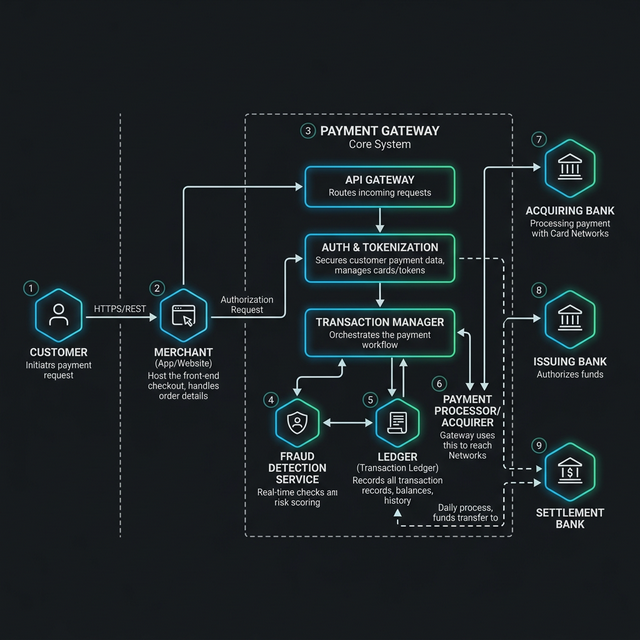

Architecture: Modern Payment Gateway
A technical deep-dive into the components, security, and data flow of a high-scale payment processing system.
Executive Summary
This document details the architectural design of a scalable payment gateway capable of processing thousands of transactions per second. The system prioritizes data integrity, low latency, and modular fraud prevention.
System Overview
The architecture is comprised of five primary layers that handle everything from user input to final bank settlement. Each layer is decoupled to ensure high availability and independent scalability.

Core Components
1. The Entry Point (Inbound Gateway)
Receives encrypted payload from the merchant SDK. It validates the request format and performs initial rate-limiting before passing the transaction to the orchestration engine.
2. Orchestration Engine
The "brain" of the system. It manages the transaction lifecycle, coordinating between fraud detection, the ledger, and external card networks.
3. Real-time Fraud Detection
A low-latency scoring service that analyzes transaction metadata against historical patterns and risk rules (e.g., velocity checks, geolocation mismatches).
4. Transaction Ledger
An immutable, double-entry record of every financial movement. This is the source of truth for reconciliation and settlement.
Transaction Life Cycle
- Authorization: The customer initiates a payment; funds are reserved at the issuing bank.
- Fraud Check: The system runs 50+ rules in <100ms to determine risk score.
- Clearing: The transaction is confirmed and moved to the internal ledger.
- Settlement: Funds are moved from the issuing bank to the merchant's account (batch process).
Security & Compliance
- PCI-DSS Level 1: Tier-one compliance for cardholder data environments.
- Tokenization: Sensitive card data never touches the merchant's server.
- Mutual TLS (mTLS): All internal service communication is authenticated and encrypted.